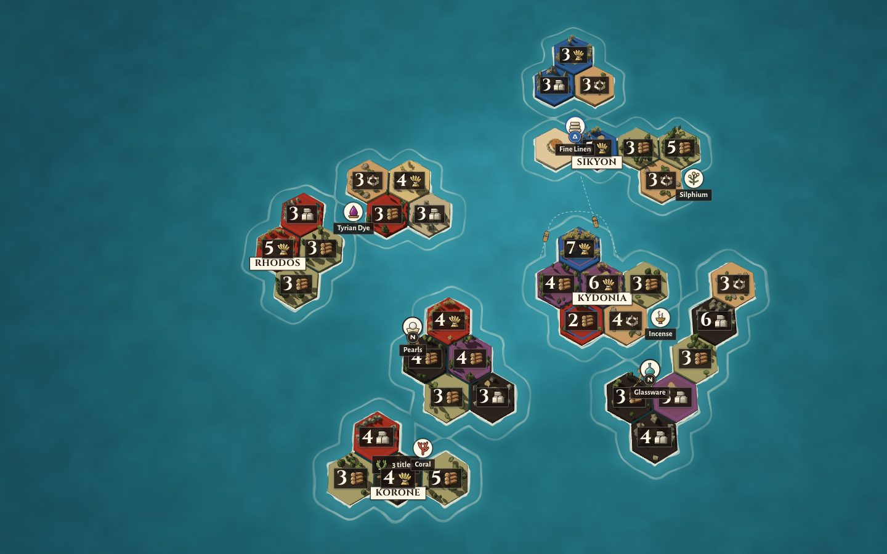
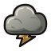
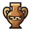
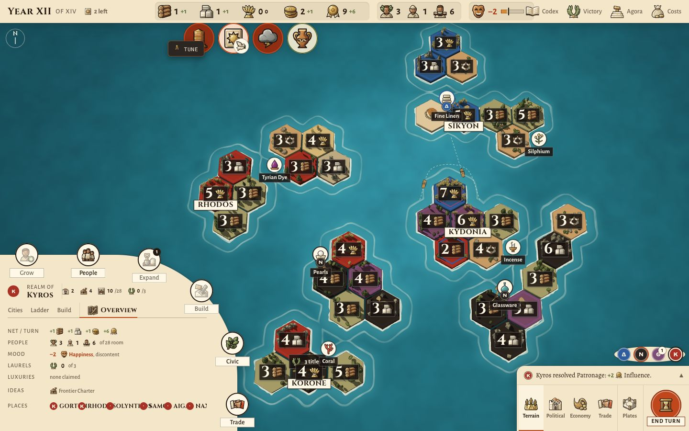
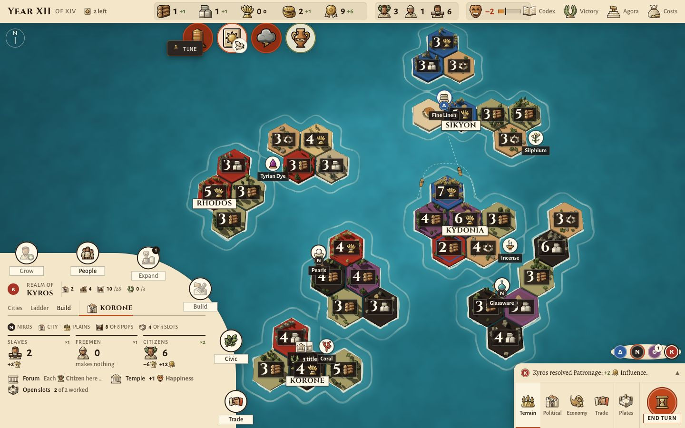
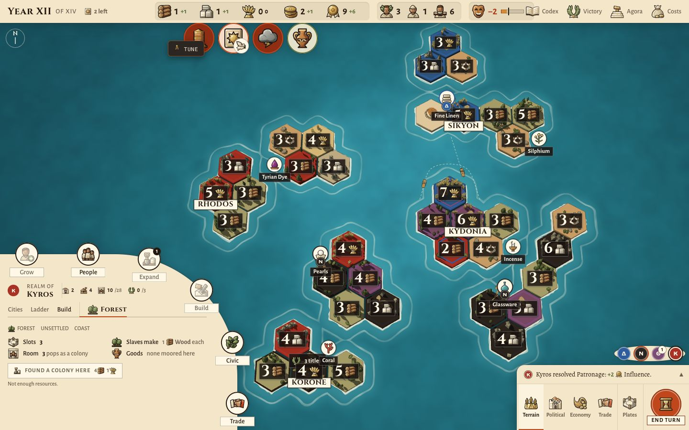
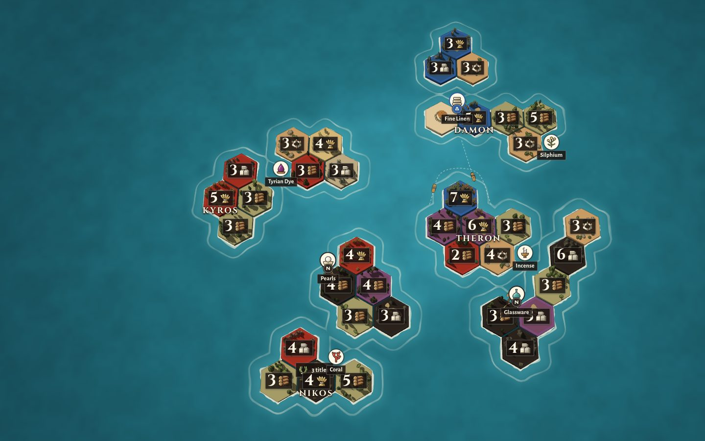

1+1
This is our real board (the late-game dev scene, Kyros to play), with the proposed shell over it. Click tiles, the sea, the seal, the left rail, the verbs and the map modes. Esc closes the top-most thing. Switch to Today to see the same state in the current build.




The picture under the prototype is a still of the 3D map, so the camera does not zoom here. A pick that would land under the inspector slides the board aside, as the real camera would. In Political the prototype draws the proposed flat realm colours over today's map.
The figures below are my schematics of Imperator 2.0's screen, drawn from the screenshots listed under Sources. They show placement and proportion, not its art.
Imperator 2.0 keeps the centre of the screen for the map. Every edge and corner has one job.
Yes. A click on a province opens the province panel docked to the bottom-left. With nothing selected nothing is there, and the map runs into the corner. The panel has no idle or summary state.
Its size follows what is selected. Your own province gets a two-part panel of about 600×460 px on a 1600×900 screen, more than a third of the width and half the height. Someone else's or unclaimed land gets a narrow card with an image and four numbers.
The large panel, top to bottom:
A realm window opened while a province is selected lies over the panel, and the panel is still there when the window closes.
A thin bar runs across the top. Each resource is an icon, its stock in large figures, and its monthly change underneath in small figures, green when it grows and red when it shrinks. Hairlines split the resources into groups: treasury and manpower first, then the realm's other measures. Nothing is labelled in words. The icon, the hover tooltip and its itemised breakdown of the change explain each number. Tooltips nest: a term inside a tooltip opens its own.
Our top bar already follows this pattern: icon, stock and change. Two things are missing. The change is set beside the stock instead of under it, and the tooltip does not itemise where the change comes from.
A titled "Map Modes" panel sits in the bottom-right corner: two rows of ten square icon buttons, the active one lit gold, and four small round buttons in its header. A minimap with the camera's frame sits under the buttons, and the panel can collapse to its title.
Every mode changes the whole picture, so you can tell modes apart at a glance. In the political mode, land is flat colour by realm, borders are bold, and each realm's name is set large across its own land. Terrain mode is the bare map. A mode can add its own strip of information, such as one player's screenshot with a row of realm flags and values along the bottom.
The only words are the panel's title. Each icon names its mode in a tooltip.
Paradox rebuilt the interface for the free 2.0 "Marius" update (February 2021). Game director Peter Nicholson described the new look as bolder and cleaner: fewer decorative corners and borders taking up screen space, decoration kept for drawing attention, signalling importance or adding immersion, and airier windows with room for art. The update also brought Crusader Kings III's nested tooltips.
The screenshots add four habits:
Take: the corner jobs, a selection panel that appears and resizes with the pick, realm windows opened from a left rail, the bar's stock-over-change cells, map modes that change the picture, nested tooltips, and one frame for every panel.
Leave: the Outliner's long lists, since we have four seats and a dozen settlements, not hundreds of armies. Also leave the minimap, since one island fits the opening view and the compass already brings it back. Leave the red-and-white Roman colouring and the portraits too: our frame stays ink, bone and ivory, with the bronze icons.
Already done: our alarms hang from the bar the way Imperator's alerts do, and End turn has its corner.
Main at c09175c, late-game dev scene, 1440×900. The numbers on the screenshots match the list below.

KORONE (NIKOS) SELECTED 2
OPEN FOREST SELECTED 7
Political| Zone | Holds | Behaviour | Comes from |
|---|---|---|---|
| Top bar | Year, the five resources, the three pop classes and room, mood | Stock over change (green helps, red hurts). Hover itemises the change by settlement. No buttons. | Today's bar, minus the consult icons |
| Seal and alarms | The seat's seal, top-left, with the alarms hanging beside it | The seal opens the realm window. Alarms work as today. | Today's alarms, moved next to the seal |
| Left rail | Realm, Cities, People · Ideas, Agora, Victory · Codex, Costs | One window at a time, opened beside the rail. Esc or × closes it. It lies over the inspector. | Realm panel tabs and today's consult strip |
| Top-right | The table: four seat discs, the toasts lane under them | Icons only, with a hover tooltip of cities, colonies and pops (your Q70 ruling). | Today's seats above the dock |
| Bottom-left | Verb bar (always). Inspector (only while something is picked). | The inspector sizes itself to the pick. With a pick, verbs and inspector actions aim at it. | The realm panel, split |
| Bottom-right | Chronicle line, map modes, Plates, End turn | As today, plus a one-line legend above the dock when the mode isn't Terrain. | Today's corner dock |
| Centre | The board | Only moments (year card, fate card, Assembly, trade composer) cover it. | Unchanged |
Three sizes, one frame. Every size has an ink title bar with the place's name, what it is and whose it is, and a close button. Under it sits a flat ivory body with small-caps section labels and hairlines, no nested boxes.
Rules it keeps.
ui:audit) gates this at 1280, 1440 and 1920 wide.The prototype shows the recommended answer to each.
This is UI work in the shell. The engine, the projections and the 3D map's renderer don't change. Slices 5 and 6 touch the map's mode filter and labels only. Each slice is one PR that leaves the game playable.
Each slice ends with screenshots at 1280, 1440 and 1920, and with ui:audit and ui:conduct green.
?dev=late-game, headless Chromium at 1440×900. Earlier owner rulings: the Three Tables pick (2026-09-28), corner dock (2026-10-22), keys 1–4 (2026-10-27), Q70 roster.